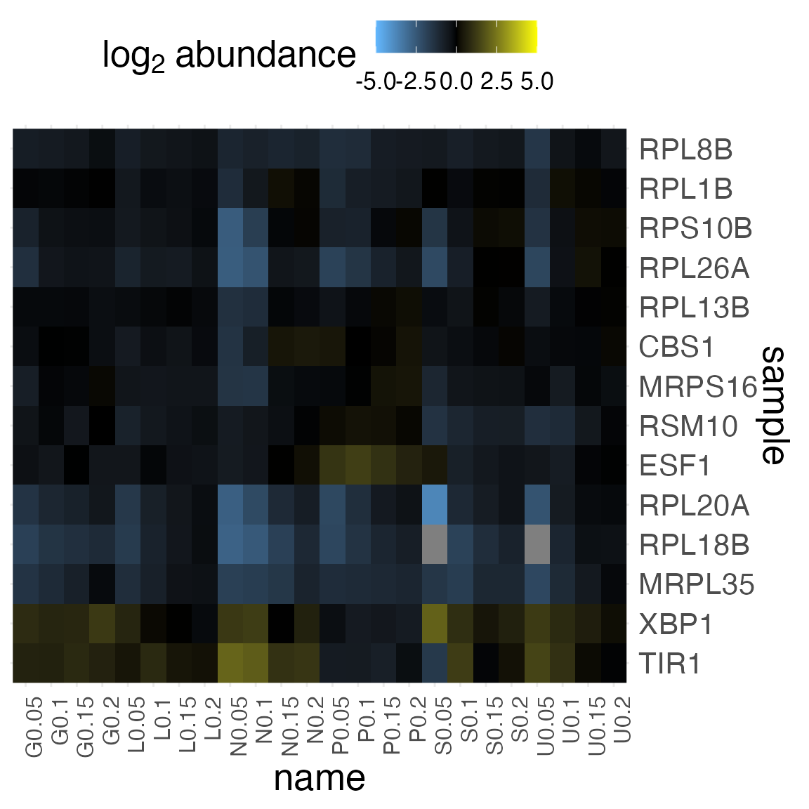

romic.RmdR ’Omic revolves around data structures for representing high-dimensional data. The data model can most easily be seen from the triple_omic object which represents features, samples, and measurements with a compact relational schema.
The relationships among variables in these tables are tracked using a design table which identifies the feature, and sample primary keys which uniquely define a feature or sample. This table also tracks the variables associated with features, samples, and measurements so these tables can be joined and re-arranged. This feature is taken advantage of to aggregate the features, samples, and measurements into a single tidy_omic table.
To demonstrate romic’s functionality, this vignette will focus on analysis of the Brauer et al. 2008 yeast gene expression experiment. In this experiment, the impact of a yeasts’ nutrient environment and growth rate on gene expression was explored using 2-color microarrays. There are 36 samples, organized in a full-factorial design (all x all levels), which differ in terms of which nutrient limits growth and how fast the culture is growing.
A tidy_omic dataset can be loaded by passing a data table and specifying which variables are unique to features, samples and measurements
tidy_brauer <- create_tidy_omic(
df = brauer_2008,
feature_pk = "name",
feature_vars = c("systematic_name", "BP", "MF"),
sample_pk = "sample",
sample_vars = c("nutrient", "DR")
)A triple_omic dataset can be loaded by providing a features, samples, and measurements tables and specifying which variarbles are the features’ and measurements’ primary keys.
triple_brauer <- create_triple_omic(
measurement_df = brauer_2008 %>% select(name, sample, expression),
feature_df = brauer_2008 %>% select(name:systematic_name) %>% distinct(),
sample_df = brauer_2008 %>% select(sample:DR) %>% distinct(),
feature_pk = "name",
sample_pk = "sample"
)Generally, we wouldn’t maintain both a triple and tidy omic version of a dataset but rather convert back and forth between these representation based on the needs of the analysis. To convert between these classes we can use:
# convert back and forth between tidy and triple representations
triple_brauer <- tidy_to_triple(tidy_brauer)
tidy_brauer <- triple_to_tidy(triple_brauer)Most functions actually don’t care whether you provide a tidy or triple representation of your dataset. These functions take a T*Omic object (i.e., tidy or triple omic), and apply an operation and return whichever class was provided. We can see this by filtering a triple_omic.
filtered_brauer <- brauer_2008_triple %>%
filter_tomic(
filter_type = "category",
filter_table = "features",
filter_variable = "BP",
filter_value = c("protein biosynthesis", "rRNA processing", "response to stress")
) %>%
filter_tomic(
filter_type = "range",
filter_table = "samples",
filter_variable = "DR",
filter_value = c(0.05, 0.2)
)We could also modify a table directly and then update it in the tomic object. For this workflow, update_tomic is used so the design can keep up with any fields that have changed.
updated_features <- brauer_2008_triple$features %>%
dplyr::filter(BP == "biological process unknown") %>%
dplyr::mutate(chromosome = purrr::map_int(systematic_name, function (x) {
which(LETTERS == stringr::str_match(x, "Y([A-Z])")[2])
}))
updated_tomic <- update_tomic(
brauer_2008_triple,
updated_features
)Romic includes a few versatile ggplot2-based plotting functions which can show a complete set of measurements, as a heatmap, or univariate/bivariate slices of features, samples or measurements.
plot_heatmap(
filtered_brauer,
value_var = "expression",
change_threshold = 5,
cluster_dim = "rows",
plot_type = "grob"
)
centered_tidy <- tidy_brauer %>%
center_tomic()
plot_univariate(
centered_tidy$data,
x_var = "expression"
)Romic maintains a valid data model when various operations are performed, and includes visualization which flexibly allow a range of views into a dataset. These attributes are leveraged through interactive data visualization shiny apps.
Check them out with ?app_heatmap and ?app_flow